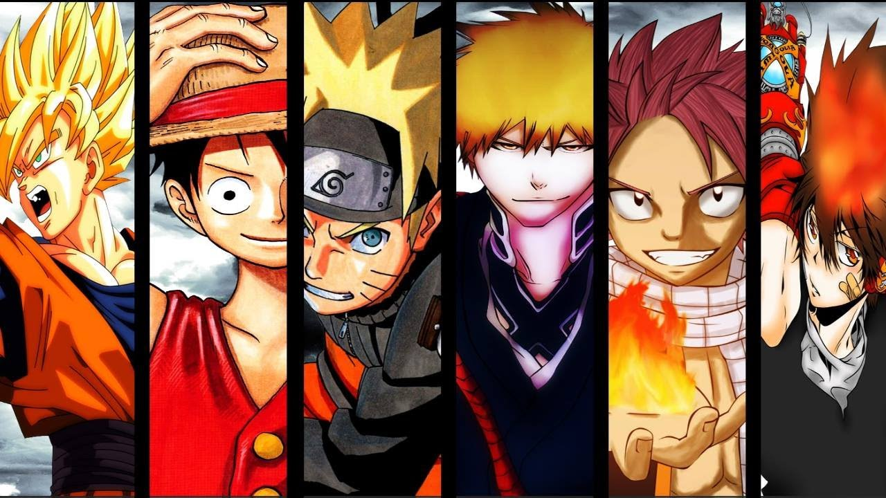
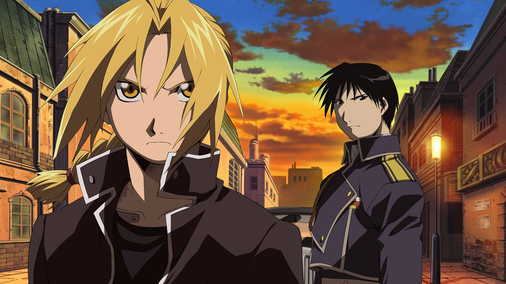
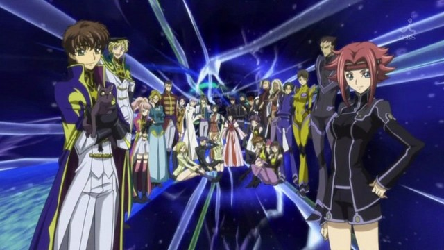

WELCOME!
to the Anime world...

Name of top 3 Anime series
- Fullmetal Alchemist: Brotherhood
- Code Geass: Lelouch of the Rebellion R2
- Death Note

Fullmetal Alchemist: Brotherhood (Japanese: 鋼の錬金術師 Hepburn: Hagane no Renkinjutsushi?) is an anime series adapted from the Fullmetal Alchemist manga by Hiromu Arakawa. Produced by Bones, the series is directed by Yasuhiro Irie and written by Hiroshi Ōnogi. Fullmetal Alchemist: Brotherhood is the second anime television series based on Fullmetal Alchemist, the first being 2003's Fullmetal Alchemist, as a 1:1 adaptation directly following the events of the manga. It was first announced in the manga series' 20th tankōbon volume.

Code Geass: Lelouch of the Rebellion R2, premiered on MBS and TBS at 17:00 JST on April 6, 2008, is the second part of the anime series, Code Geass. Prior to the series' television broadcast, three private preview screenings of episode 1 were held on March 15 and March 16 in Osaka and Tokyo respectively, which was attended by the series' Japanese voice actors as well as a pool of 3800 randomly selected applicants. On April 15, 2008, at 17:00 JST, the last 6 minutes of the then unaired third episode was accidentally posted onto the Internet due to an error by Bandai Channel